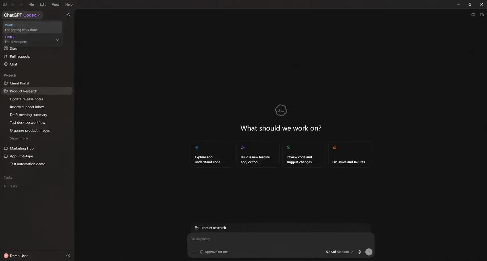

Codex na Prática
Versão: 0.2.2
Última revisão das fontes: 18 de agosto de 2026
- A leitura essencial cabe em cerca de 5 minutos; o restante é opcional.
- Não há exercícios, exemplos nem uso do terminal neste guia.
- O aprofundamento aponta para a documentação oficial da OpenAI.
- Este é um guia para o Codex, mas a lógica vale para Claude Code, Cursor, Antigravity, etc.
Introdução: Codex na prática
Você usa soluções de IA somente no modo chat?
- Rotina: anexar um arquivo, adicionar contexto, pedir uma transformação, baixar o resultado e repetir?
Este guia mostra o salto para o Codex no aplicativo desktop.
O gargalo imediato costuma ser o fluxo, não o modelo de IA:
- A pasta passa a ser a referência do trabalho e cada chat registra uma tarefa.

Fonte: ChatGPT for Windows, Windows Mode. A interface pode diferir da versão atual do aplicativo.
1. Crie um projeto na pasta e pare de tratar arquivo como anexo
Recomendação
- Abra um projeto local no aplicativo desktop e aponte a pasta do trabalho.
- Deixe de enviar e baixar arquivos pela interface do navegador.
Por que / ganhos
- Fica uma versão canônica no disco, sem o ciclo anexar / baixar / “qual é o arquivo certo?”.
- O Explorador de Arquivos continua sendo a fonte da verdade.
- O chat registra a tarefa, não o acervo de arquivos.
Na prática
- Crie o projeto local, aponte a pasta e, se houver várias, defina a principal.
- Separe entradas (“inputs”), referências (para consulta) e resultados (“outputs”).
- Com o Codex você pode orientar quais subpastas importam.
- Um contexto bem selecionado rende mais do que anexos grandes sem função.
Pasta local não é modo offline: conteúdo necessário ao processamento pode ser enviado aos serviços do aplicativo. Não use a Área de Trabalho nem a raiz de um disco como projeto.
2. Comece com o Modo Planejamento (mesmo em projetos simples)
Recomendação
- No primeiro pedido do projeto, sempre que o resultado não for óbvio, use o Plan mode antes de começar a escrita ou edições.
Por que / ganhos
- Você vê o plano (e o entendimento) do que deve ser feito antes de o agente mexer em arquivos.
- Pedidos muito extensos, vagos ou não óbvios (leia-se: boa parte de nossas necessidades) deixam de virar execução às cegas.
- O escopo do trabalho fica explícito e o receio de alterações indevidas diminui.
- Você pode pedir para salvar o plano em um arquivo.
Na prática
- Peça um plano. Verifique o que entra e o que sai, quais arquivos mudam e como conferir os resultados.
- Confirme as decisões que julgar adequadas, ou revise pontos específicos. Só então peça a execução do plano já revisado.
Não confunda execução com a criação de um novo pedido.
Plano sem execução não entrega o resultado. Depois de aceitar, peça a execução em termos desse plano e não de um pedido novo e vago.
3. Grave o plano no disco: spec, histórico e convenções
Recomendação
- Não deixe o acordo só no fio do chat. Grave-o em arquivos na pasta do projeto.
- Isso é a prática de spec-driven development (desenvolvimento orientado por especificação): um acordo escrito do que deve ser feito.
- A prática vale para código, pesquisa, análise e produção de documentos.
Por que / ganhos
- O disco vira memória além da janela de contexto. Chats novos herdam o histórico sem colar tudo de novo, e você revisa um texto estável.
- O histórico de alterações permite ver o progresso e as decisões tomadas.
- Ao aceitar o plano, peça “grave isto em
plano.md”, por exemplo. - Ao fechar uma fase, acrescente uma linha no
CHANGELOG.md.
Na prática
- Nomes podem variar;
.md(markdown) é preferível,.txttambém serve.plano.md: objetivo, fontes, fora de escopo e critério de pronto.CHANGELOG.md: o que já foi feito em fases anteriores (histórico de alterações, versionamento, etc.).AGENTS.mdouconvenções.md: regras duráveis (idioma, não sobrescrever entradas, citar fonte, etc.).
- Em pesquisa, se fizer sentido:
plano-pesquisa.md,fontes.md,metodologia.md(notas de decisões metodológicas), etc.
4. Troque o modelo e o esforço conforme a tarefa
Recomendação
- Não deixe o modelo padrão o tempo todo. O mais poderoso nem sempre é o necessário.
- Combine a capacidade do modelo com o nível de raciocínio (esforço) de cada tarefa.
Por que / ganhos
- Trabalho rotineiro fica mais rápido e consome menos tokens.
- A qualidade se concentra onde há julgamento, ambiguidade ou risco.
Na prática
Olhe o seletor de modelo e o esforço antes de enviar o pedido.
- Tarefas simples e delimitadas (renomear, extrair campos, padronizar, resumir uma pasta já inspecionada): um modelo mais leve com esforço alto costuma bastar. Exemplo atual: GPT-5.6 Luna em Extra High.
- Tarefas ambíguas, de julgamento ou de alto risco: reserve Terra ou Sol e suba o esforço se a primeira passagem falhar.
- Se emperrar, troque modelo ou esforço num chat novo.
Extra High no Luna não substitui revisão humana nem Plan mode. Nomes e disponibilidade dependem do plano e da versão do aplicativo.
5. Abra um chat novo quando o assunto mudar
Recomendação
- Um chat, um resultado.
- Quando o assunto mudar, abra outro chat no mesmo projeto.
Por que / ganhos
- Instruções antigas não competem com as novas.
- Menos contexto irrelevante (e menos tokens) é um ganho.
- Fica mais fácil ver o que cada chat fez.
Na prática
- Título pelo objetivo da tarefa ou pela ordem das tarefas:
- Ex.: “Síntese dos relatórios de julho” ou “1. Asdf”, “2. Asdf”, “3. Asdf”, etc.
- Continue no mesmo chat só para corrigir a mesma meta.
- Se o projeto for muito grande, pode ser útil arquivar o que já concluiu ou o que não é mais relevante.
Dois chats não devem escrever o mesmo arquivo ao mesmo tempo.
6. Você continua no controle: o Codex não apaga o computador
Recomendação
- Trate o Codex como um agente com acesso à pasta autorizada e use as permissões a seu favor.
Por que / ganhos
- No chat do navegador a IA não mexe no disco; o risco é cópia, upload e perda de versão.
- No Codex ela pode criar, editar ou apagar dentro da pasta do projeto, mas só com permissões, sandbox e a sua aprovação (comando, alvo, motivo).
- Abrir um projeto não entrega o computador inteiro.
Na prática
- Comece em só leitura e autorize escrita depois do plano.
- Leia o pedido de permissão (comando, alvo, motivo) e não aprove no automático.
- Preserve originais e separe entrada (inputs) e resultado (outputs).
- Nunca sobrescreva o único exemplar na primeira tentativa.
- Confirme classificação e autorização de documentos profissionais antes.
Permissões não substituem revisão humana de números, documentos formais e das alterações nos arquivos.
Primeira sessão: cinco passos
- Crie o projeto local e aponte a pasta do trabalho (não a Área de Trabalho).
- Abra um chat no Plan mode, escolha o par modelo/esforço da tarefa (Luna Extra High se for simples e delimitada) e descreva o resultado com os quatro elementos abaixo.
- Revise o plano; peça para gravá-lo em
plano.md. - Só então autorize a execução. Confira os arquivos no Explorador, não só a mensagem final.
- Arquive ou encerre a tarefa. Abra um novo chat para o próximo resultado. Se a fase fechou, acrescente uma linha no
CHANGELOG.md.
Um pedido curto pode seguir este modelo:
Objetivo: consolidar as conclusões dos relatórios mensais.
Contexto: use somente os PDFs da pasta relatorios-2026.
Restrições: preserve os originais e escreva em português claro.
Concluído quando: existir um resumo.md com fontes e pendências identificadas.
Atualize plano.md com o acordo desta tarefa.O objetivo é o resultado, o contexto aponta os arquivos, as restrições protegem formato e fontes, e “concluído quando” permite conferir o fim. Se algo for importante, escreva; não dependa de o agente adivinhar.
Saiba mais — quando o uso já estiver andando
Esta parte aprofunda três temas. Não é necessária para começar. Volte aqui quando tarefas longas, regras duráveis do projeto ou PDFs extensos aparecerem no seu trabalho.
PDFs extensos, privacidade e consumo de contexto
Antes de usar documentos de trabalho, confirme classificação, autorização e política institucional. Remover nomes de arquivo não anonimiza necessariamente o conteúdo. Informações pessoais, sigilosas ou contratuais podem permanecer no texto, nas tabelas, nos metadados e nas imagens.
- Para PDFs extensos, comece pedindo uma inspeção do tipo de documento, quantidade de páginas e disponibilidade de texto.
- Delimite páginas, capítulos ou perguntas quando souber o que procura.
- Um PDF digital pode permitir extração direta; um documento escaneado pode exigir OCR e revisão adicional.
- Evite reenviar o mesmo arquivo em vários chats sem necessidade. Mantenha a fonte na pasta do projeto, preserve um texto extraído quando isso for autorizado e peça resultados intermediários compactos.
- Essas práticas reduzem repetição e melhoram o foco, mas não representam garantia de uma quantidade específica de tokens ou de custo.
- Separe entrada, transformação e resultado. Em análises sensíveis, prefira começar em modo de leitura e só autorize gravações depois de revisar o plano.
Retome Boas práticas do Codex para contexto, limites e validação, e confira Projetos e chats para o escopo das pastas locais.
Goal mode e trabalhos longos
Tarefas longas precisam de um resultado verificável, restrições claras e uma definição de conclusão. Goal mode mantém esse objetivo visível enquanto o agente avança por várias etapas. Ele não amplia permissões nem elimina a necessidade de aprovação quando surgir uma decisão importante.
- Se o objetivo ainda estiver confuso, planeje primeiro.
- Formule a meta em termos do que deve existir ao final, dos limites que devem ser respeitados e da verificação que comprovará o resultado.
- Durante a execução, você pode fornecer contexto adicional, ajustar restrições ou pedir um resumo de situação.
- Preserve o mesmo chat quando as mensagens ajudam a concluir a mesma meta; use outro apenas para trabalho realmente independente.
- Uma tarefa longa mantém a mesma política de sandbox e aprovações; iniciar Goal mode não concede acesso adicional ao computador ou à internet.
Consulte Trabalho de longa duração.
Detalhes de AGENTS.md
AGENTS.md é um arquivo de instruções duráveis para o Codex. Ele registra regras que não deveriam ser repetidas em todo chat: idioma, convenções de nomes, comandos de validação, limites de segurança e critérios de conclusão.
- As instruções podem existir no nível global e dentro de projetos.
- O Codex combina as orientações desde a raiz do projeto até a pasta atual; arquivos mais próximos do trabalho específico têm precedência sobre regras mais gerais.
- Mantenha o arquivo curto, concreto e atualizado. Preferências vagas como “faça tudo perfeitamente” ajudam pouco.
- Regras observáveis — “preserve UTF-8”, “não sobrescreva arquivos de entrada”, “registre a fonte de cada afirmação” — podem ser verificadas.
- Um
AGENTS.mdnão substitui o pedido atual. Ele fornece os acordos permanentes; o chat continua precisando dizer qual resultado deve ser produzido agora.